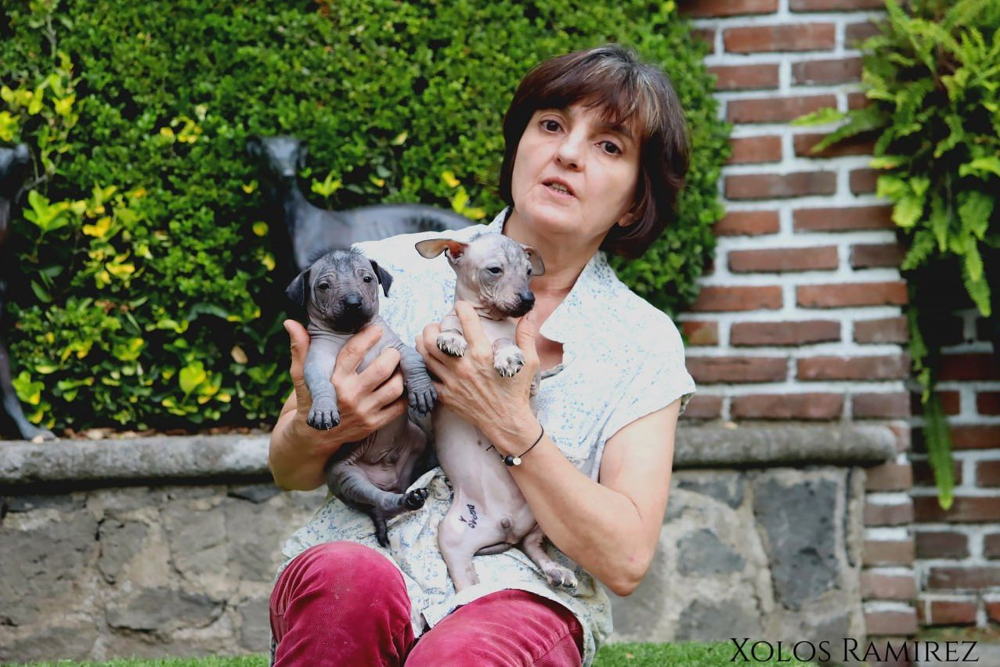
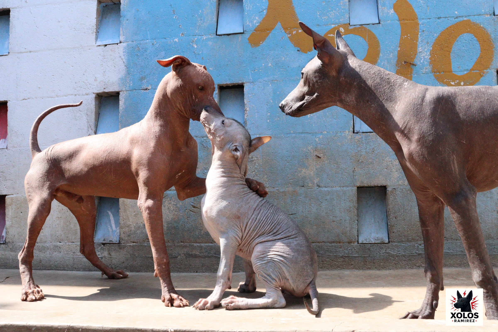

Garantía de salud
Entregamos a cada Xolo con certificado de salud, vacunas, desparasitación, microchip y su registro NFT de linaje.

✔️ Criadero documentado · ✔️ Acompañamiento real · ✔️ Entregas nacionales e internacionales
Xolos Ramírez — Guardianes del linaje, criadores de historia viva.
Nuestra Misión Conservación de la Raza: Creemos firmemente en la importancia de la conservación del Xoloitzcuintle, por lo que solo agregamos Xoloitzcuintles puros y registrados a nuestro programa de cría. Seleccionamos cuidadosamente parejas compatibles para asegurar la salud genética y el bienestar general de los cachorros. Crianza con Amor y Cuidado: Nuestro criadero es un hogar dedicado al amor y cuidado de los Xoloitzcuintles. Valoramos la autenticidad de la raza y nos esforzamos por contribuir a su legado ancestral. Selección de Ejemplares de Calidad: Seleccionamos cuidadosamente a los perros que forman parte de nuestro programa de cría, buscando preservar las características únicas y deseables del Xoloitzcuintle.
Entregamos a cada Xolo con certificado de salud, vacunas, desparasitación, microchip y su registro NFT de linaje.
Aceptamos efectivo y eCash (XEC) como opciones de pago con comprobante, claridad en cada paso y acompañamiento profesional para una experiencia serena, confiable y a la altura de tu elección.
Enviamos a todo México y al extranjero cumpliendo los requisitos veterinarios y de viaje.

Perfiles detallados con información de salud, temperamento y requisitos de adopción.
Explorar ejemplares
Recopilamos relatos, investigaciones y datos arqueológicos que muestran el papel del xoloitzcuintle en la cosmovisión mesoamericana.
Leer másOrganizamos recorridos culturales, charlas con especialistas y encuentros familiares donde los xolos son protagonistas.
Suscríbete al boletín por email para recibir invitaciones y contenido exclusivo de la comunidad.

Hoy celebramos un momento muy especial para nuestra comunidad: la entrega oficial de Humo Ramírez a su nueva familia, representada por Lucianna. Este encuentro no solo marca el inicio de una nueva vida compartida, sino también la continuidad de un legado que une tradición, linaje y tecnología.
Leer más“Mi Xoloitzcuintle cambió mi vida. Gracias a Xolos Ramírez.”
— Carmen, Guadalajara
“El acompañamiento fue increíble. Se nota su amor por la raza.”
— Edgar, Veracruz
Cada Xoloitzcuintle tiene un propósito. Descubre el impacto en sus nuevas familias.
Ver Historias de Éxito

Xolos Ramírez forma parte de xolosArmy Network, una arquitectura cultural y digital que protege el linaje, la identidad y la memoria de cada Xoloitzcuintle.
Conocer la Civilización Tonalli ↗